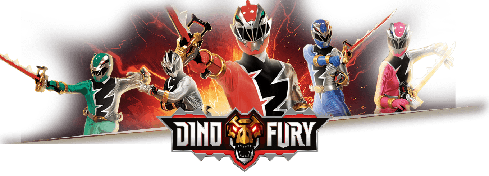
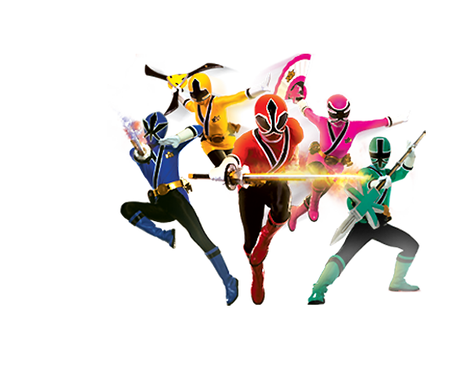
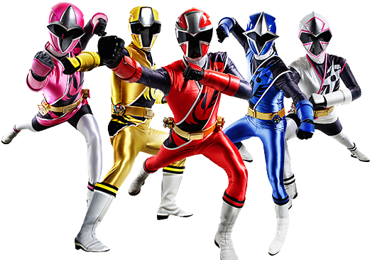

Welcome to The PowerRangers World.
"Step into the electrifying Power Rangers universe, where a dynamic team of extraordinary individuals harness incredible powers, cutting-edge technology, and unwavering teamwork to defend the world against formidable villains, embarking on epic adventures that captivate audiences of all ages."
What is PowerRangers
Power Rangers is a popular and long-running American tv show that originated from the Japanese television series "Super Sentai." Created by Haim Saban and Shuki Levy, Power Rangers made its debut in 1993 and has since become very popular The franchise revolves around a group of ordinary individuals typically teenagers who morph into color-coded, superheros known as the Power Rangers. Each Ranger is associated with a specific color, possesses unique abilities, and controls a giant robot called a Zord. Together, they defend the world against various evil forces and monsters. One distinctive feature of Power Rangers is its combination of live-action scenes with footage from the Super Sentai series, creating a unique blend of action, adventure, and teamwork. The series often includes moral lessons and character development, making it appealing to a broad audience, especially children and teenagers. Over the years, Power Rangers has expanded into various television series, movies, comic books, video games, and merchandise. The franchise has maintained a dedicated fan base and continues to introduce new generations to the exciting world of morphin' superheroes.
Fan Favorites

Power Rangers Dino Fury
Power Rangers Dino Charge

Power Rangers Samurai

Power Rangers Ninja Steel